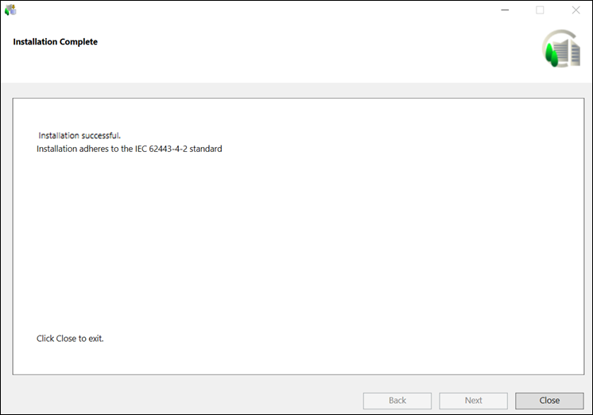

Close the Installation Wizard
- When the installation program is complete, the Installation Complete dialog box displays. Click Close to complete the installation.
NOTE: In case of any installation errors, such as failure in installing the prerequisite/extension/language pack, click the View Log button to open the log file and view the details of the errors. (See Description of Installer Error Codes) 
If all the installed extensions are IEC certified, a message "Installation adheres to the IEC 62443-4-2 standard" displays in the Installation Complete dialog box.
A list of all the installed extensions along with their IEC certification status is also present in the installer log present at [System Drive] \[ProgramData]\[Siemens]\GMS\InstallerFramework\GMS_Installer_Log.

- The selected setup type server/server with web server (IIS) installation is successful.
The currently logged in user is added as a member of the IIS_IUSRS group.
The default website deleted from IIS manager and hence does not display in SMC.
The post-installation steps, if available, for the platform or installed extension modules are executed. - (Optional and applicable only for post-installation step – License Activation) The licenses are activated based on the license files (.lic) available and/or Activation/Entitlement IDs specified. You can verify license activation of these files in LMU.
For already active licenses, expired licenses, invalid file format or missing files, and so on a message displays:Installation Successful but with some errorsin the Installation Complete dialog box. In this case click the View Log button that displays in the Installation Complete dialog box to open the Installer ELog file located at the path [System drive]:\ProgramData\[company name]\GMS\InstallerFramework\GMS_Installer_Log. - (Optional and applicable only for post-installation step – Project Setup) A project template or a project backup from the specified backup path is restored. It also creates an empty History Database with or without Long Term Storage and links the HDB to the restored project, upgrades the project, if required, activates and starts the project, and then finally displays the logon dialog box for specifying the credentials.
A password prompt is displayed during the project restore when Pmon user is domain/local user and is a specific account.
In addition a website and a web application is created. If you have configured an existing Windows domain user, you must provide the password in the command prompt window that displays during website creation. It is added as a member of the IIS_IUSRS group. Otherwise, a new web application user is created and added as a member of the IIS_IUSRS group.
Internally this user is assigned access rights on virtual directories (graphics, libraries, documents, shared, and devices folders) inside the Server project folder. Also, a default self-signed certificate used for securing the communication between the Windows App client and the web server (IIS) is created.
The web application is linked to the project and the website and web application https URLs are provided in the installation log file, located at the path
[System drive]:\ProgramData\[company name]\GMS\InstallerFramework\GMS_Installer_Log.
For any invalid website/web application configuration, missing IIS configuration, invalid domain user and so on, a message displays:Installation Successful but with some errorsin the Installation Complete dialog box. For more information, refer to the SMC log when required at the following path
[Installation drive]:\[installation folder]\GMSMainProject\log. - (Optional and applicable only for post-installation steps of other extensions) The post-installations steps of other extensions, when correctly configured and enabled by modifying the .txt file to .xml, are executed as well successfully.
- (Optional and applicable only for Quality Updates and Hotfixes) The patches for prerequisites, platform, mandatory extensions, and the non-mandatory extensions, as applicable are installed. For any errors during the patch installation, refer to the (_ELOG) file.